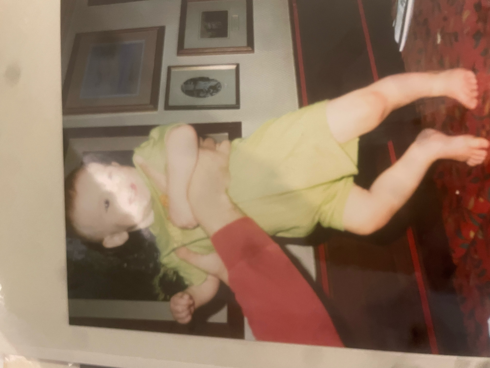
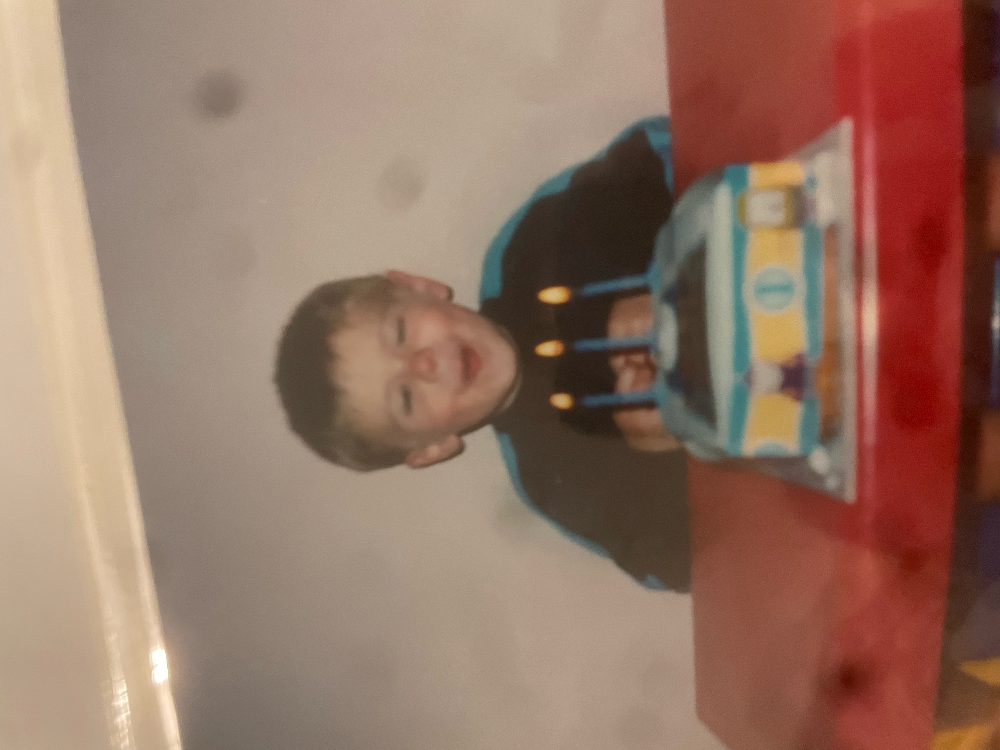
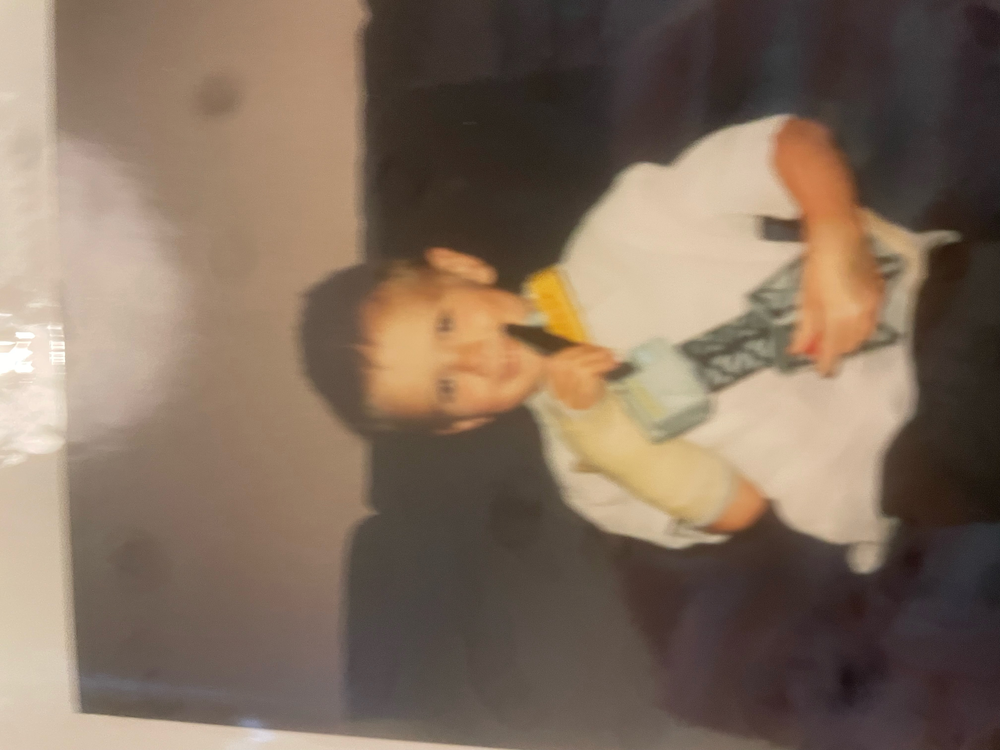
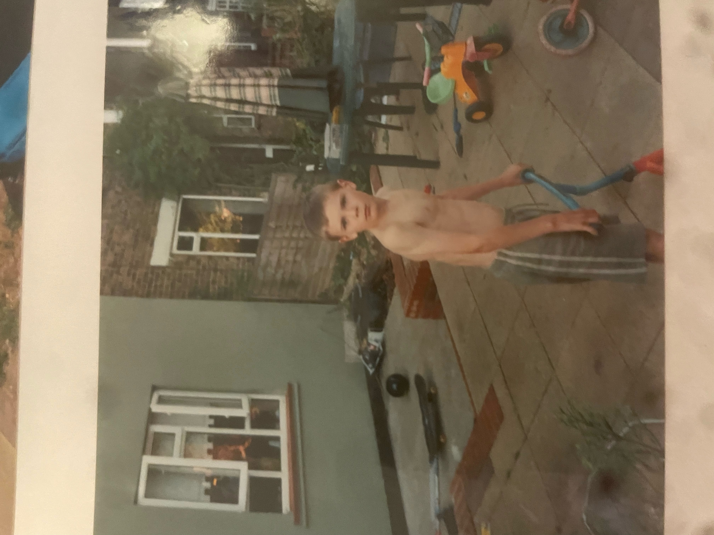

Life for Dec began in 1997, in Walthamstow, London. It is here where he spent the first 8 years of his life, and the focus of this page.

Life for Dec began in 1997, in Walthamstow, London. It is here where he spent the first 8 years of his life, and the focus of this page.


Dec was born on 18th September 1997 at Whipps Cross Hospital, Waltham Forest, London, sometime around 1:00. I don't know how much I weighed, but I'm pretty sure I was a small baby. That didn't last.

It would appear that, from a very young age, I was a bit of a showman, y'know, a bit vain. This seems to be a trait which lasted quite a while. If it wasn;t posing naked on a bed, it was pulling faces for school photos.

I stayed living in London until August 2005, before we moved away. My childhood home was quite small, however it did have a huge garden, where much time was spent playing with my neighb ours, and my brother. Fond memories of us playing Sonic in the garden, while my brother cried because we said he had to be Doctor Eggman.
Thank you for coming to me webpage, my very first (outside of that incredibly visually unappealing recipes one). I've decided that, to give it a bit of flavour, and something tangible to aim to build, it will be a very basic autobiographical site. It's essentially a brief imagining of my life in 3 stages, from youth, throughthe development years, into where I am now. Enjoy the journey of me.
With thanks,
Dec
Hold it right there!
Have you subscribed to the newsletter yet? No? No worries, this button here will fix that!